Gitlab
Git服务器搭建
Gitlab服务器概述
- Gitlab是一个用于仓库管理系统的开源项目
- 使用Git作为代码管理工具，并在此基础上搭建起来的web服务
- Gitlab由乌克兰程序员DmitriyZaporozhets和ValerySizov开发
- 使用Ruby语言开发。后来，一部分用Go语言重写
- Gitlab社区版是完全免费的，不但能建立免费的私有仓库而且没有数量上限，参与人员 有没有数量限制，还能设置成员权限
搭建本地gitlab服务器
- 容器化部署gitlab
- 导入中文版gitlab镜像
1 | [root@node1 ~]$ yum install -y docker |
- 将物理主机ssh端口改为2022后，启动容器
1 | [root@node1 ~]$ vim /etc/ssh/sshd_config |
初始化gitlab服务器
- 当状态变为
healthy时就可以使用浏览器访问本机IP - 密码需要大于8位
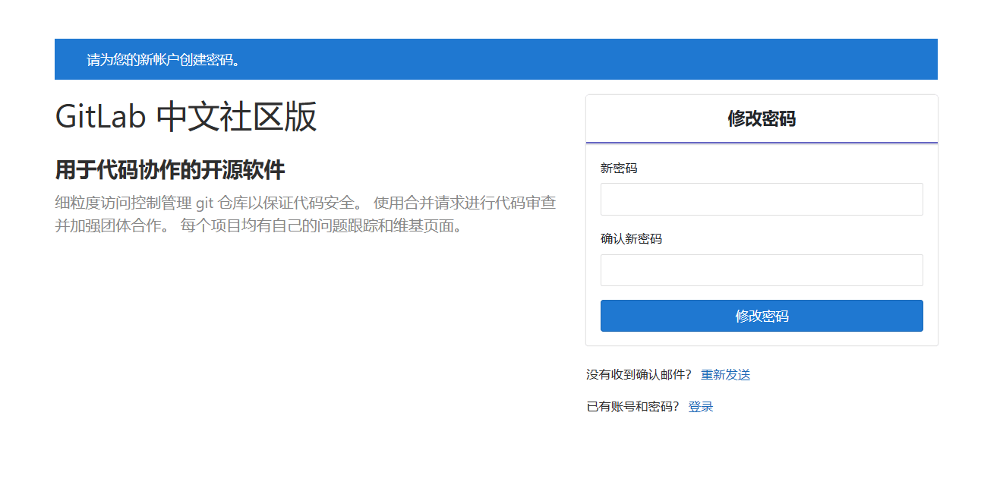
- 修改密码后登录
- 默认用户名为root
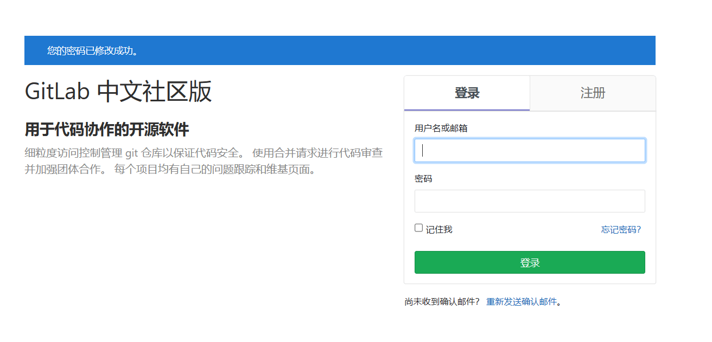
添加gitlab项目
创建群组
group使用群组管理项目和人员是非常好的方式
创建项目
project存储代码的地方，里面还包含问题列表、维基文档以及其他一些Gitlab功能
创建成员
member添加你的团队成员或其他人员到Gitlab
创建群组
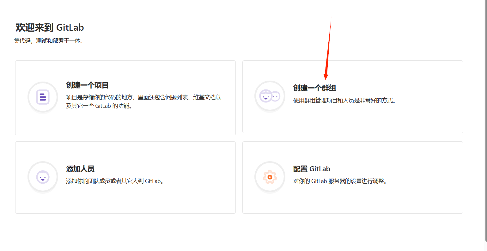
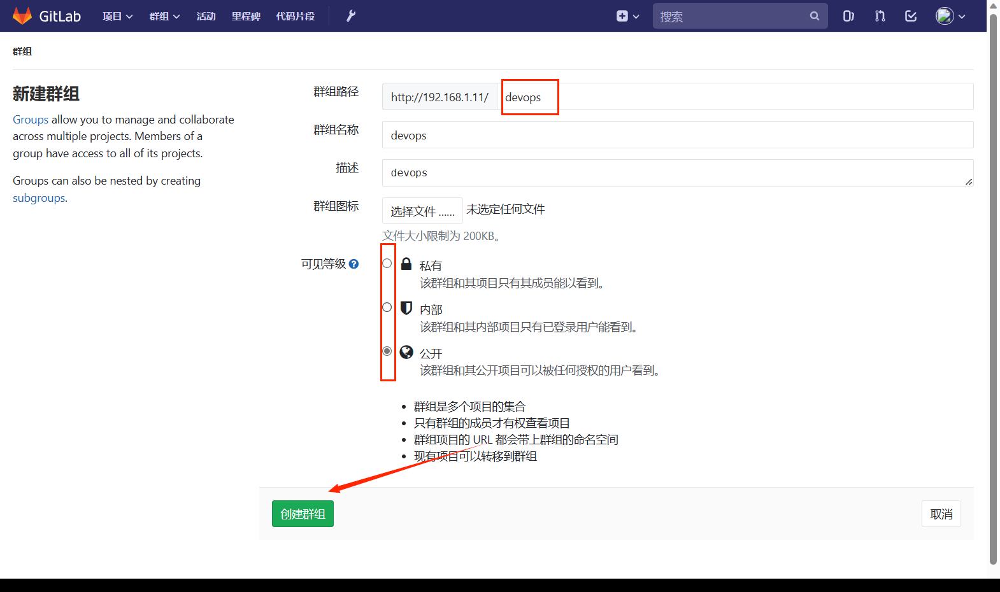
创建项目
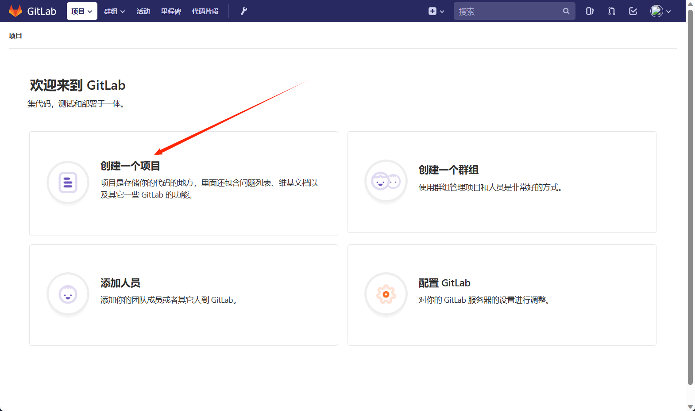
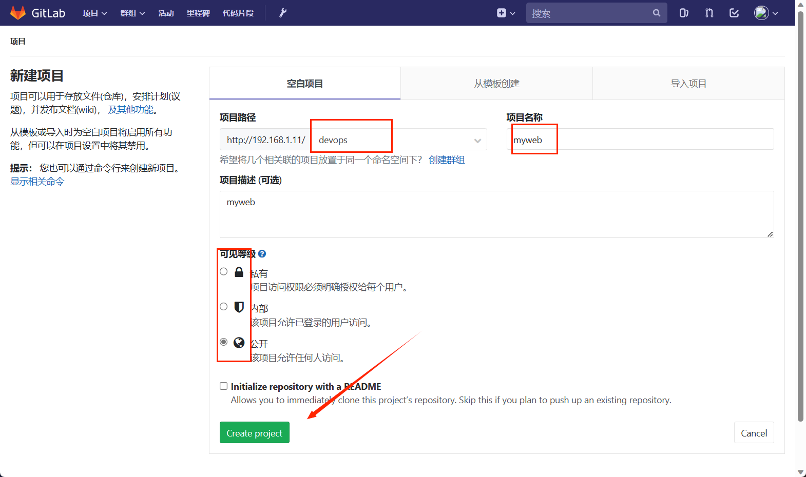
使用gitlab
用户管理
创建用户
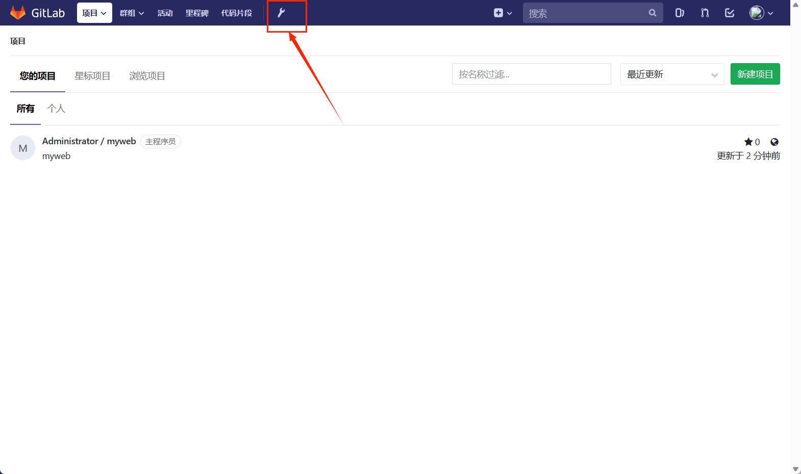
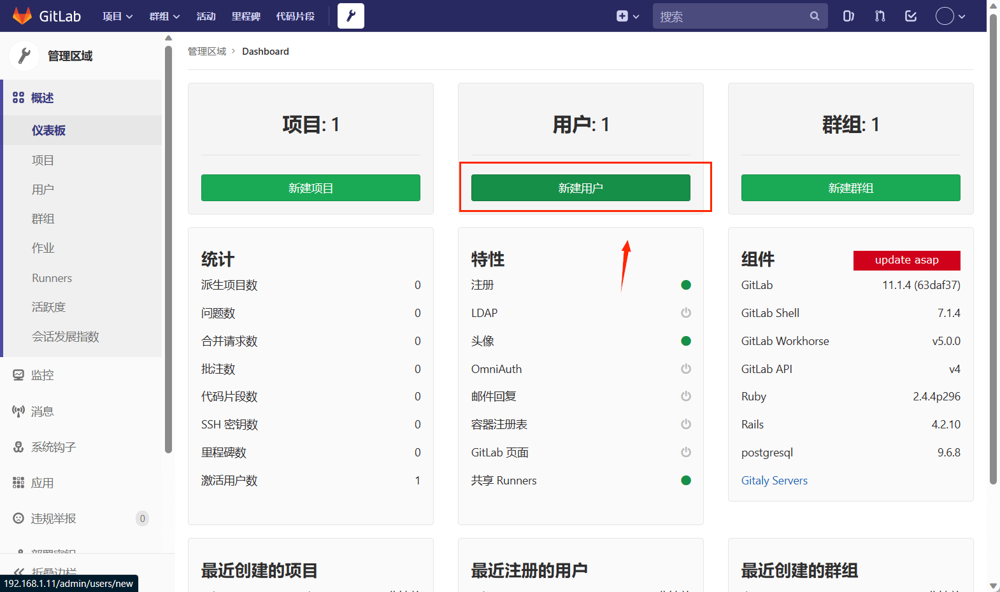
- 创建完用户，通过编辑设置密码
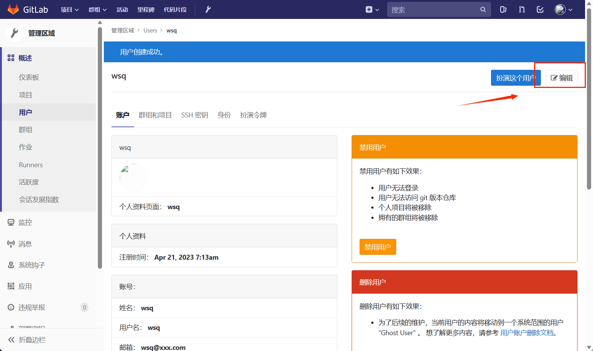
- 把用户添加到devops组中
- 进入devops组中操作
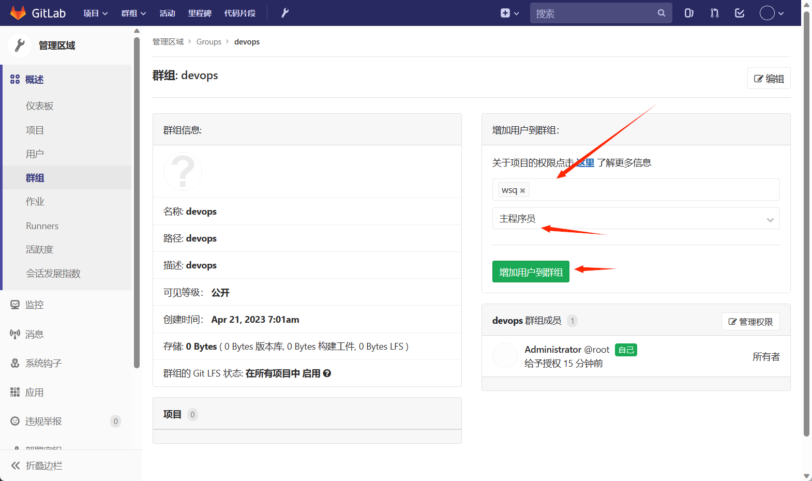
- 进入项目可查看
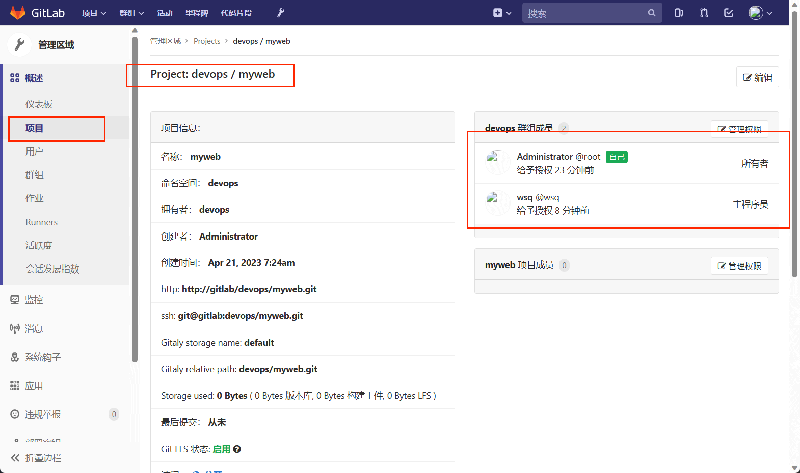
- 退出root使用普通用户登录
- 第一次登录会让修改密码
代码管理
通过http协议上传代码
- 将本地仓库推送至服务器
1 | [root@node1 myweb]$ git remote add origin http://192.168.1.11/devops/myweb.git |
- 添加新文件
1 | [root@node1 myweb]$ echo '# this is a test' > hi.py |
下载代码
- 下载代码到本地
1 | [root@node1 ~]$ cd /opt/ |
- 更新代码到本地
1 | [root@node1 myweb]$ git pull |
配置免密登录
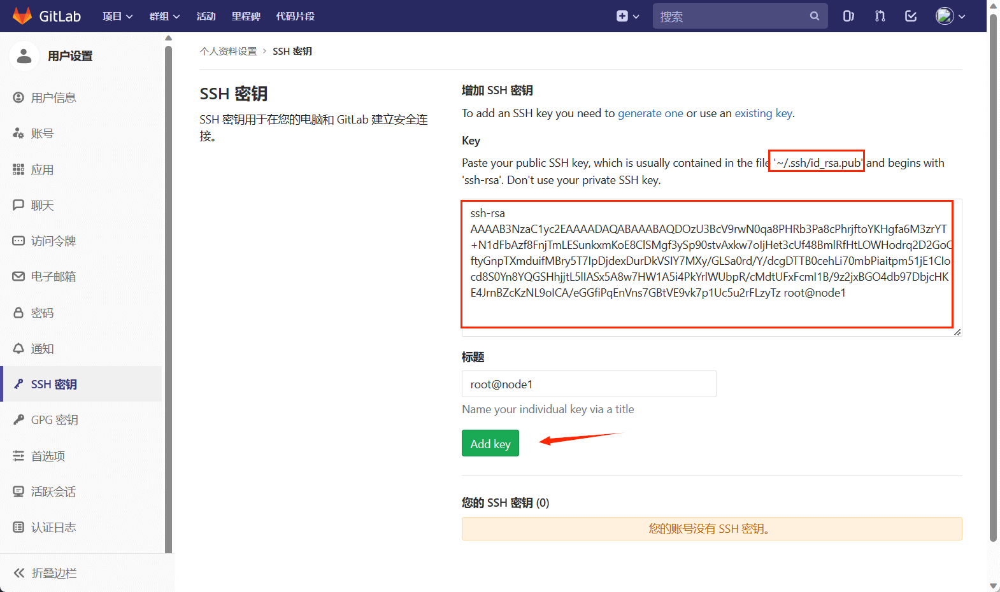
1 | [root@node1 myweb]$ echo "good" >> README.md |
远程分支管理
远程仓库
远程仓库基础
- 远程仓库是指托管在因特网或其他网络中的你的项目的版本库
- 可以有多个远程仓库，通常有些仓库对你只读，有些则可读写
- 与他人协作涉及管理远程仓库以及根据需要推送或拉取数据
- 管理远程仓库包括添加远程仓库、移除无效仓库、管理不同分支并定义它们是否被跟踪等待
查看远程仓库
- 如果你已经克隆了仓库，那么至少因该能看到origin，这是Git给你克隆的仓库服务器的默认名字
1 | [root@node1 /]$ git clone git@192.168.1.11:devops/myweb.git |
添加远程仓库
- 运行
git remote add <shorname> <url>添加一个新的远程Git仓库
1 | [root@node1 myweb]$ git remote |
- 现在可以在命令行使用字符串pb来代替整个URL
- 如果你想拉取仓库中有但你没有的信息，可以运行
git fetch pb
1 | [root@node1 myweb]$ git fetch pb |
从远程仓库fetch数据
git fetch <remote>这个命令会访问远程仓库，从中拉取所有你还没有的数据- 如果使用
clone命令克隆了一个仓库，命令会自动将其添加为并默认以“origin”为简写。所以，git fetch origin会抓取克隆后推送的所有工作 git fetch命令只会将数据下载到你的本地数据库——它并不会自动合并或修改你的当前的工作
推送到远程仓库
- 当你想分享你的项目时，必须将其推送到上游
- 将master分支推送到origin服务器
1 | [root@node1 myweb]$ git push origin master |
查看远程仓库
- 如果想要查看某一个远程仓库的更多信息，可以使用
git remote show <remote>命令
1 | [root@node1 myweb]$ git remote show origion |
重命名远程仓库
- 可以运行
git remote rename来修改一个远程的简写名 - 将pb重命名paul
1 | [root@node1 myweb]$ git remote |
- 那些过去引用
pb/master的现在会引用paul/master
移除远程仓库
- 可以使用
git remote remove或git remote rm
1 | [root@node1 myweb]$ git remote remove paul |
使用远程分支
远程分支
- 远程引用是对远程仓库的引用（指针），包括分支、标签等等
- 以通过
git ls-remote <remote>获得远程引用的完整列表 - 远程跟踪分支是远程分支状态的引用。它们是无法移动的本地引用
- 一旦进行了网络通信，Git就会为你移动指针以精确反映远程仓库的状态
远程分支命名
- 远程分支以
<remote>/<branch>的形式命名，如origin/master - “origin”是当你运行
git clone时默认的远程仓库名字 - 远程仓库名字“origin”与分支名字“master”一样，在Git中并没有任何特别的含义
服务器与本地仓库
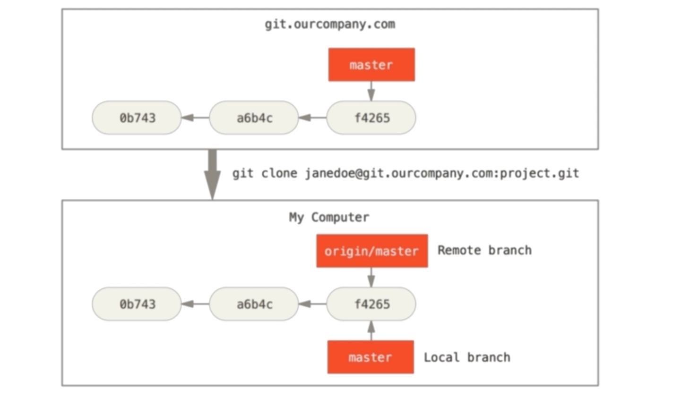
继续提交
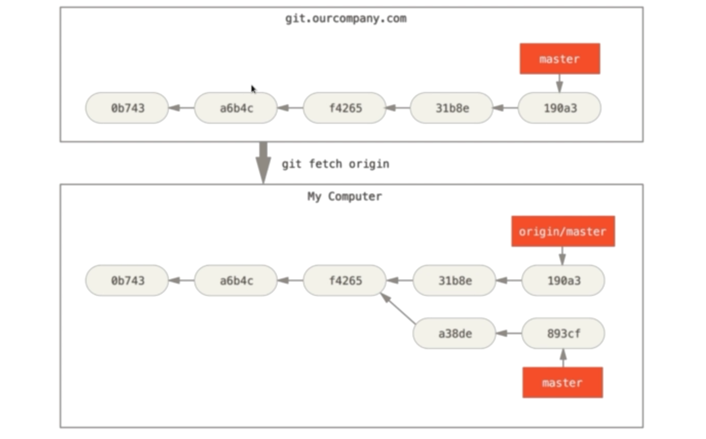
推送分支
- 运行
git push <remote> <branch> - 推送
本地serverfix分支到远程的serverfix分支
1 | [root@node1 myweb]$ git push origin serverfix |
跟踪分支
- 从一个远程跟踪分支检出一个本地分支会自动创建所谓的“跟踪分支”
- 它跟踪的分支叫做“上游分支”
- 跟踪分支是与远程分支有直接关系的本地分支
- 当克隆一个仓库时，它通常会自动的创建一个跟踪
origin/master的master分支
拉取数据
- 当
git fetch命令从服务器上抓取本地没有的数据时，它并不会修改工作目录中的内容。它只会获取数据然后让你自己合并 git pull会查找当前分支所跟踪的服务器与分支，从服务器上抓取数据然后尝试合并入那个远程分支- 可以理解为
git pull是一个git fetch紧接着一个git merge命令
删除远程分支
- 如果想要从服务器上删除serverfix分支，运行
1 | [root@node1 myweb]$ git push origin --delete serverfix |
本博客所有文章除特别声明外，均采用 CC BY-NC-SA 4.0 许可协议。转载请注明来自 ૮(˶ᵔ ᵕ ᵔ˶)ა！